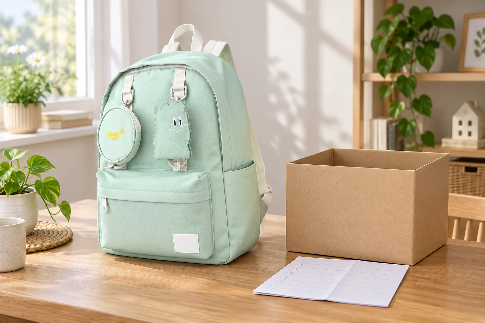

쓰던 백팩을 보내기 전에 남길 정보

쓰지 않는 백팩을 누군가 다시 사용하면 좋겠다는 생각이 들어도 바로 상자에 넣어 보낼 수 있는 것은 아닙니다. 받을 곳이 가방을 받는지, 어떤 상태를 필요로 하는지 먼저 확인해야 합니다. 자신의 기준으로 아직 쓸 만하다고 판단한 물건과 받는 사람이 실제로 사용할 수 있는 물건은 다를 수 있습니다. 전달 준비의 첫 단계는 가방을 새것처럼 보이게 만드는 일이 아니라 상대가 필요와 상태를 알고 선택할 수 있게 하는 것입니다.
기부처에 연락할 때는 수령 품목과 상태 기준, 접수 방식부터 확인합니다. 같은 종류의 가방도 시기나 기관의 상황에 따라 받는 범위가 달라질 수 있으므로 예전 안내만으로 보내지 않습니다. 개인에게 양도한다면 상대가 실제로 필요한지와 전달할 방법을 먼저 이야기합니다. 답을 받기 전에 문 앞에 두거나 일방적으로 보내면 상대에게 처리할 물건이 생기므로, 수령 가능 여부를 확인한 다음 포장을 준비할 수 있습니다.
현재의 가방을 설명하는 자료
사진이 필요하다면 지금 전달할 가방을 직접 촬영합니다. 정면만 남기기보다 바닥과 끈 연결부, 안쪽의 상태처럼 사용 흔적이 있는 위치도 보이게 합니다. 사진에 주소나 연락처, 집 안의 개인 문서가 함께 담기지 않는지도 확인하세요. 공식 제품 사진은 처음의 외형을 참고하는 자료이며 현재 물건의 상태를 대신 보여주지 않습니다. 얼룩이나 수선한 부분이 있다면 가까운 사진과 짧은 설명을 함께 남길 수 있습니다.
가방에 따로 달았던 키링과 이름표는 함께 줄 것인지 분리할 것인지 정합니다. 원래 구성과 개인이 추가한 물건이 섞여 있다면 받는 사람이 구분할 수 있게 설명할 수 있습니다. 분리 가능한 부속품이 빠졌거나 다른 것으로 바뀌었다면 그 사실도 남깁니다. 원래 무엇이 포함됐는지 확실하지 않으면 현재 전달할 목록을 기준으로 적으면 됩니다. 현재 없는 물건을 제품명만 보고 함께 보낸다고 약속할 필요는 없습니다.
여밈과 끈은 사용 가능한지 실제로 움직여봅니다. 지퍼를 자연스럽게 여닫을 수 있는지, 연결부에 눈에 띄는 풀림이 있는지 살피고 발견한 상태를 그대로 설명합니다. 원인을 모르는데 특정 사용 방식 때문에 생긴 흔적이라고 단정하지 않습니다. 받는 곳이 해당 상태의 물건을 받는지도 확인하세요. 수선이 필요해 보이는 부분을 숨겨 전달하면 상대가 사용 전에 다시 확인해야 하므로, 판단할 정보가 먼저 전달되는 편이 좋습니다.
모델을 확인할 자료가 남아 있다면 현재 가방과 대조합니다. 예를 들어 Himawari No.0422 제품 정보는 민트 제품의 원래 정보를 참고할 수 있는 페이지입니다. 같은 모델을 보낸다고 해도 내 가방의 여밈이나 안감, 함께 전달할 구성은 실제 물건을 기준으로 설명해야 합니다. 받는 사람이 궁금해하는 것이 현재 상태라면 상품 이름을 길게 적는 것보다 사용 흔적이 어디에 있는지 구체적으로 알려주는 편이 도움이 됩니다.
비우기와 관리의 범위
큰 수납칸을 비웠다면 실제 가방에 있는 작은 주머니를 차례로 확인합니다. 손으로 안쪽 모서리까지 살피고 열쇠나 카드, 사진과 종이가 남아 있는지 봅니다. 가방을 거꾸로 흔드는 것만으로 작은 칸까지 비었다고 알 수는 없으므로 여밈을 하나씩 열어 확인합니다. 사용하던 사람에게 중요하지 않아 보이는 메모라도 주소나 출입 정보가 담길 수 있으니 개인 물건과 함께 따로 챙기면 됩니다.
표면의 이름표와 개인 표시도 확인합니다. 떼어낼 수 있는 것은 분리하고, 원단에 남은 글씨처럼 쉽게 지워지지 않는 표식은 받는 곳에 알려 수령 가능 여부를 묻습니다. 강하게 문질러 없애려 하면 현재 상태가 더 달라질 수 있으므로 관리 표시를 벗어나는 처리를 임의로 하지 않습니다. 표식을 제거했다고 설명하기 전에 실제로 어떤 부분이 남았는지 확인하면 상대도 전달받을 물건의 상태를 알아볼 수 있습니다.
먼지와 부스러기는 제품 관리 안내에 맞는 범위에서 정리합니다. 소재를 모른 채 세탁기나 강한 세제를 사용해 상태를 바꿀 필요는 없습니다. 물기를 사용했다면 남아 있는지 확인하고 충분히 마른 상태에서 포장을 준비합니다. 오래 보관한 냄새나 지워지지 않는 흔적은 가리지 않고 설명하세요. 향이 강한 제품으로 덮어 새것처럼 보이게 만드는 것보다 현재 상태를 상대가 판단할 수 있게 남기는 편이 전달 취지에 맞습니다.
포장 전에 짧은 목록을 만들면 실물과 설명을 대조하기 쉽습니다. 가방 한 개와 함께 보낼 부속품, 확인한 사용 흔적, 추가로 알려야 할 표식을 적을 수 있습니다. 목록에 있는 것만 포장하고 개인 소지품이 다시 들어가지 않도록 마지막으로 여밈을 살핍니다. 가방에 들어갈 종이를 준비한다면 받는 곳이 요구하는 정보만 남겨두세요. 배송을 위한 연락 정보와 물건의 상태 설명을 같은 자료에 불필요하게 모을 필요는 없습니다.
전달 방법은 받는 곳의 안내를 따릅니다. 직접 가져갈 경우 약속한 시간과 장소, 담당 확인 방법을 알아두고, 택배를 허용하는 경우에는 안내된 포장 조건을 확인합니다. 가방을 접어야 하는 포장이라면 실제 구조에 무리가 없는 범위인지 먼저 봅니다. 끈과 여밈이 포장 입구에 끼지 않도록 정리하고, 아직 수령이 확정되지 않았다면 발송 전에 다시 확인할 수 있습니다. 전달 기록이 필요하다면 안내받은 방식으로 남기면 됩니다.
보낸 뒤에는 내 물건이 함께 들어가지 않았는지와 전달이 안내대로 이루어졌는지를 확인합니다. 다시 쓸 개인 키링이나 표식은 평소 보관 자리로 돌려놓습니다. 다음에도 물건을 보내려 한다면 이번 수령 기준을 다른 기관에 그대로 적용하지 않습니다. 필요한 물건과 상태가 각각 다를 수 있기 때문입니다. 현재 상태를 보여줄 자료를 남기고 상대의 수령 기준을 확인하는 순서라면 다음 전달에서도 무엇을 먼저 해야 하는지 알 수 있습니다.